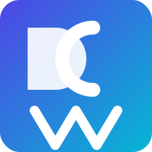

Lecture 1 — Introduction & Tools
Data & Code Management: From Collection to Application
2025-09-25
Welcome!
- Course: Data & Code Management: From Collection to Application
- Time & place: Thursdays 9:00–12:00
- Communication: Slack (class workspace)
- Materials: GitHub repo & website
- Grading: participation (bonus), homeworks (3 indivuals) and final project (group)
- Always refer to the website for the latest info!
“Reproducibility is job #1 for modern data science.”
‚Äî everyone who has ever lost a script üòâ
Note
Today’s goals
1. Understand course scope & expectations
2. See why reproducibility matters
3. Meet the core toolchain (R, Python, SQL, GitHub, Markdown/Jupyter/Quarto)
4. Try small, focused exercises
Agenda
- Course overview & evaluation
- Reproducibility in analytics
- Core tools & workflows
- Mini‑exercises
Tip: Slides include short activities you can try during/after class.
Course Overview
- Orientation: hands‑on data & code practices for analytics
- You will:
- write clean R/Python code
- query data via SQL
- document with Markdown/Jupyter/Quarto
- use Git/GitHub (branches, PRs, issues)
- deliver a reproducible project (group)
- We value: clarity, collaboration, curiosity
Tip
Success checklist
- Commit early, commit often
- Make small, reversible changes
- Automate what repeats
- Document decisions, not only code
- Prefer scripts & notebooks over manual clicks
Expectations & Evaluation
- Participation: engaged presence, Slack questions/answers
- Homeworks: short, targeted (programming, SQL, tooling)
- Project: real‑world style, reproducible deliverable
- Academic integrity: cite sources, no copy‑paste answers
Tools allowed: R, Python, SQL, Quarto, GitHub, AI copilots (with provenance & verification).
What are LLMs?
Definition: Large Language Models (LLMs) are AI models trained on vast amounts of text data to understand and generate human language.
Examples:
- GPT-3, GPT-4 (OpenAI)
- Gemini (Google)
- LLaMA (Meta)
- Claude (Anthropic)
Capabilities:
- Natural language understanding and generation
- Text completion, summarization, translation
- Assistance in various domains, including programming.
Why are they important for programming?
- LLMs can understand code as a special type of language.
- They offer assistance in code generation, debugging, and improving programming productivity.
LLM for Programming - Key Features
- Code Suggestions:
- Automates repetitive coding tasks.
- Helps in writing boilerplate code.
- See for instance GitHub’s copilot.
- Error Debugging:
- Identifies and resolves bugs in code snippets.
- Suggests alternative solutions or optimizations.
- Code Explanation:
- Breaks down complex code into simple explanations.
- Helps in learning new programming concepts.
Benefits of Using LLMs like ChatGPT in Programming
1. Increased Productivity
- Automates repetitive and boilerplate tasks.
- Helps explore new coding approaches faster.
2. Learning and Discovery
- Explains code, libraries, and new languages in an intuitive manner.
- Great for beginners and advanced users alike.
Challenges and Considerations
1. Not Always Correct
- LLMs can suggest incorrect code, requiring human oversight.
2. Context Limitations
- LLMs lack the full project context, so they might not understand the specific requirements.
3. Ethical Concerns
- Intellectual property, security, and data privacy must be considered when using AI for programming.
Important
AI policy (short)
Use AI to brainstorm, outline, or lint code. Own the result: verify outputs, write your tests, and document AI assistance (what, why, where).
Reproducibility: Why it matters
Symptoms of non‑reproducible work (raise your hand if you’ve seen these):
- “It works on my machine.”
- “I changed nothing and it broke.”
- “Which file is the final_final_v3.R?”
Principles
- Deterministic environments
- Versioned code and data contracts
- Scripts, not clicks
- Single‑source of truth (parameters, config)
- Literate programming (Markdown/Quarto)
- Automated checks (CI later in course)
Minimal Project Structure
project/
├─ data/ # raw/ and processed/ (never overwrite raw)
├─ R/ or src/ # functions, modules
├─ notebooks/ # exploratory analysis
├─ reports/ # Quarto/Markdown outputs
├─ tests/ # unit tests
├─ renv/ or .venv/ # R or Python environment
├─ .gitignore
└─ README.mdTooling Map
- R (tidyverse, data.table) & Python (pandas, polars)
- SQL for data retrieval/joins/aggregations
- Git + GitHub for versioning & collaboration
- Markdown/Jupyter/Quarto for literate workflows
- Optional helpers: make, pre-commit, linters
R snippet
Caution
Are these codes reproducible? Why/why not?
SQL Refresher (we’ll go deeper later)
Tip
Tip: Keep SQL in .sql files and load/parametrise from R/Python for reproducibility.
Git in 6 commands
Note
Activity (think‑pair‑share):
What makes a good commit message? Write one for “fixed weird bug in script” that would help your future self.
Literate Programming with Quarto
- Write text + code together
- Render to HTML/PDF/slides/reports
- Parametrized reports & caching
- Works with R and Python
:::
Render:
```bash
quarto render report.qmdImportant
House rule: every analysis step appears in a script/notebook—no manual spreadsheet edits.
Environments (determinism)
R — renv
Note
Exercise (1′): List one package you rely on in R and in Python. Why lock its version?
Data Contracts & File Hygiene
- Never overwrite raw/ data
- Validate schemas (columns, types, keys)
- Record data provenance (source, timestamp)
- Use
.gitignoreto avoid committing large/secret files
Quick Wins You Can Adopt Today
- Create a project with folders from the template earlier
- Initialize Git and push to GitHub
- Set up renv or .venv
- Convert one analysis to Quarto
Tip
Stretch goal: Add a small test (R testthat or Python pytest) for a helper function you wrote.
Mini‑Exercise 1 (R)
Objective: Write a function and test it quickly.
Discussion: How would you handle NA edges?
Mini‑Exercise 2 (Python)
Objective: Clean a small dataset and compute a grouped metric.
Discussion: Where would assertions / schema checks go?
Mini‑Exercise 3 (SQL)
Objective: Translate a business question into SQL.
“Which products grew the most month‑over‑month in 2025?”
WITH monthly AS (
SELECT product_id,
DATE_TRUNC('month', order_date) AS month,
SUM(amount) AS revenue
FROM orders
WHERE order_date >= DATE '2025-01-01'
GROUP BY product_id, DATE_TRUNC('month', order_date)
),
growth AS (
SELECT product_id, month,
revenue,
LAG(revenue) OVER (PARTITION BY product_id ORDER BY month) AS prev_revenue
FROM monthly
)
SELECT product_id, month, revenue, prev_revenue,
(revenue - prev_revenue) AS delta
FROM growth
WHERE prev_revenue IS NOT NULL
ORDER BY delta DESC
LIMIT 10;Collaboration Rituals
- Branch → small PR → peer review → merge
- Use Issues with labels (“bug”, “enhancement”, “question”)
- Templates:
PULL_REQUEST_TEMPLATE.md,ISSUE_TEMPLATE.md - Document decisions in
CHANGELOG.md
Note
Activity: In pairs, outline a PR description for adding a new utils/plot.R with one function and one test.
Common Pitfalls & How to Avoid Them
- Undocumented notebooks → add titles, goals, outputs
- Hidden state (globals) → pass parameters explicitly
- One giant script → split into modules
- No seeds → set seeds where randomness matters
- Unpinned packages → lock versions
Literate Tools — Markdown, Jupyter, Quarto (curated)
What is RMarkdown?

- RMarkdown:
R+markdown markdowncontrastsmarkuplanguages (e.g. HTML) which require syntax that can be quite difficult to decipher for the uninitiated- RMarkdown is a framework that provides a literate programming format for data science.
- Literate programming: programmers add narrative context with code to produce documentation for the program simultaneously.
- Reproducible research: the whole process (collecting data, performing analysis, producing output,…) can be reproduced the same way by someone else.
Is there a reproducibility crisis?
What is RMarkdown?
In a nutshell, R Markdown stands on the shoulders of knitr and Pandoc. The former executes the computer code embedded in Markdown, and converts R Markdown to Markdown. The latter renders Markdown to the output format you want (such as PDF, HTML, Word, and so on). .right[– R Markdown: The Definitive Guide]
Git & GitHub — Workflows & Tips (curated)
GitHub
Motivation
- When working on a project, there are usually different people working on the same file/folder
- You want to avoid sending each modification by email
- You could use dropbox/google drive and the likes but it is good practice to keep track of modifications and have a platform to plan and discuss changes
Motivation
GitHub allows you: - record the entire history of a file; - revert to a specific version of the file; - collaborate on the same platform with other people; - make changes without modifying the main file and add them once you feel comfortable with them.
What’s Next
- Next lecture: Programming foundations (R & Python)
- Before next time: ensure you can
- clone a GitHub repo,
- create a branch & commit,
- render a Quarto
.qmdto HTML, - set up
renvor.venv.
Tip
If stuck: ask on Slack—show error, steps tried, and minimal example.
Q&A
Thanks!
Optional: After class, try converting one old analysis to Quarto and push it to GitHub with a short README.

HEC Lausanne · Business Analytics · Thu 9:00–12:00